From one raw 4K take
to a clean video and its shorts
De una toma 4K cruda
a un video limpio y sus shorts
A reproducible design for cutting silences, filler words and repeats, adding subtitles, zooms and a green-screen background, and extracting shorts, on a small Linux box with a person approving every step that matters.
Un diseño reproducible para cortar silencios, muletillas y repeticiones, sumar subtítulos, zooms y fondo verde, y sacar shorts, en una caja Linux chica con una persona aprobando cada paso importante.
How it works
Cómo funciona
1 · Record once
1 · Grabar una vez
One continuous 4K take, dropped in a shared folder. No manual cutting.
Una toma 4K continua, dejada en una carpeta compartida. Sin cortar a mano.
2 · Cut list first
2 · Primero la lista
Silences, fillers, repeats and retakes become a list with a reason each. A person approves it.
Silencios, muletillas, repeticiones y tomas falladas pasan a una lista con su motivo. La aprueba una persona.
3 · One render
3 · Un solo render
Cuts, zooms, background and subtitles in a single pass from the original: no quality lost.
Cortes, zooms, fondo y subtítulos en una sola pasada desde el original: sin pérdida de calidad.
4 · Shorts
4 · Shorts
Candidates proposed, you approve, 9:16 reframe that follows the face; with and without subtitles.
Candidatos propuestos, vos aprobás, reencuadre 9:16 que sigue la cara; con y sin subtítulos.
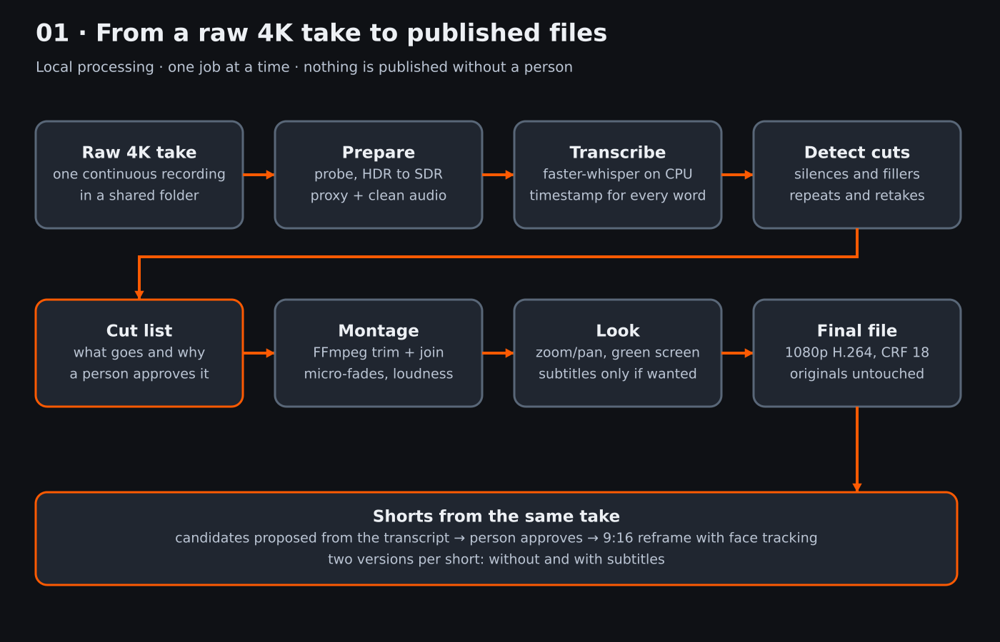
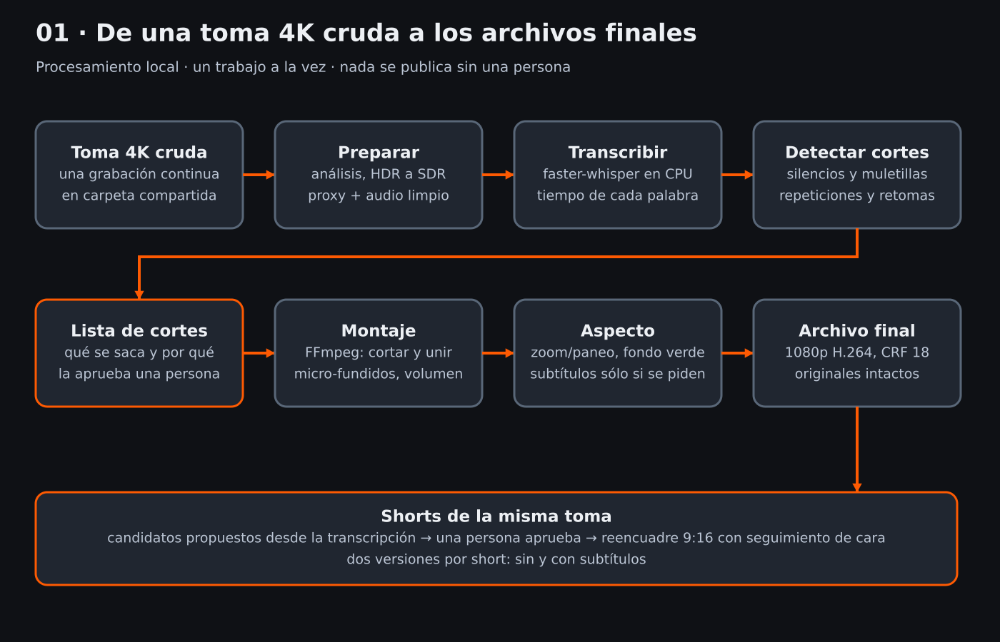
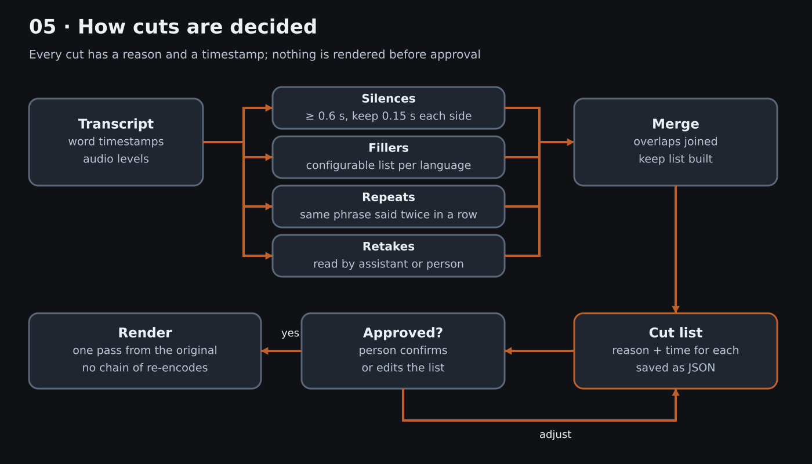
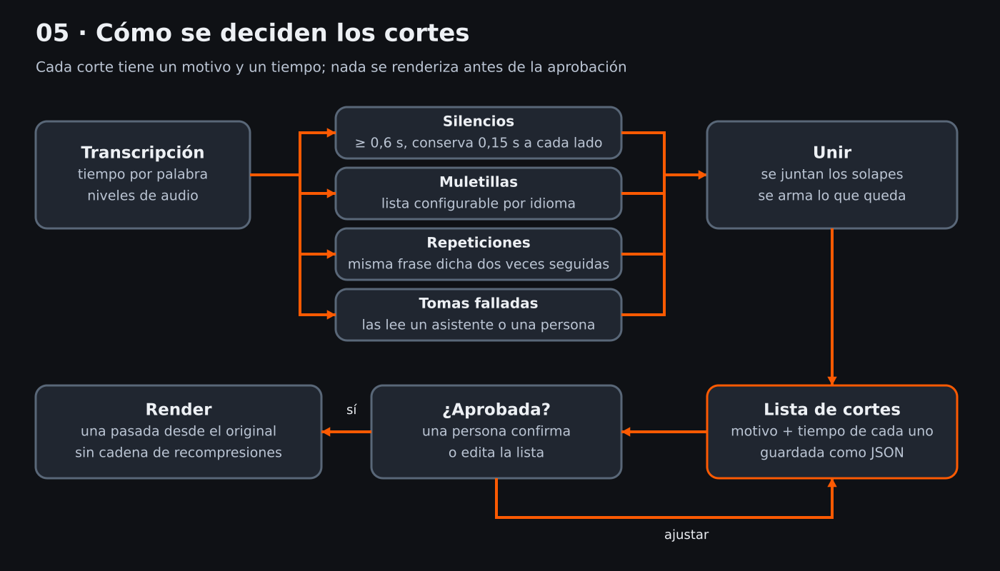
Designed for home hardware
Pensado para hardware hogareño
Built to deliver 1080p finished video on standard home hardware: no discrete GPU, no cloud. Quality and privacy are kept; the price is time, and the design absorbs it by running unattended, overnight.
Construido para entregar video terminado en 1080p con hardware hogareño estándar: sin GPU dedicada, sin nube. Se mantienen la calidad y la privacidad; lo que se paga es tiempo, y el diseño lo absorbe corriendo de noche, sin supervisión.
Fits a daily routine
Entra en una rutina diaria
A 10-minute daily video: about 30 minutes of machine time. A 30-minute video with 5 shorts: about 1 h 25 min.
Un video diario de 10 minutos: unos 30 minutos de máquina. Uno de 30 minutos con 5 shorts: unas 1 h 25 min.
Stays out of the way
No molesta
One job at a time, lowest priority, started at night: the computer is free for daily work.
Un trabajo a la vez, prioridad mínima, iniciado de noche: la computadora queda libre para el trabajo del día.
Memory
Memoria
32 GB of RAM recommended as a minimum. 16 GB works with precautions: one job at a time, a smaller Whisper model, fast swap.
32 GB de RAM como mínimo recomendado. Con 16 GB se puede con recaudos: un trabajo a la vez, un modelo de Whisper más chico, swap rápido.
Little human time
Poco tiempo humano
About 8 minutes to approve the cut list, plus about 1 minute per short.
Unos 8 minutos para aprobar la lista de cortes, más cerca de 1 minuto por short.
How long it takes estimates, not measurements
Cuánto tarda estimaciones, no mediciones
Try your own case. The numbers come from one model file and assume a mini PC with 4 cores / 8 threads, 32 GB and an integrated GPU, no discrete GPU. They are replaced with real measurements after the first prototype.
Probá tu caso. Los números salen de un solo archivo de modelo y suponen un mini PC con 4 núcleos / 8 hilos, 32 GB y GPU integrada, sin GPU dedicada. Se reemplazan por mediciones reales después del primer prototipo.
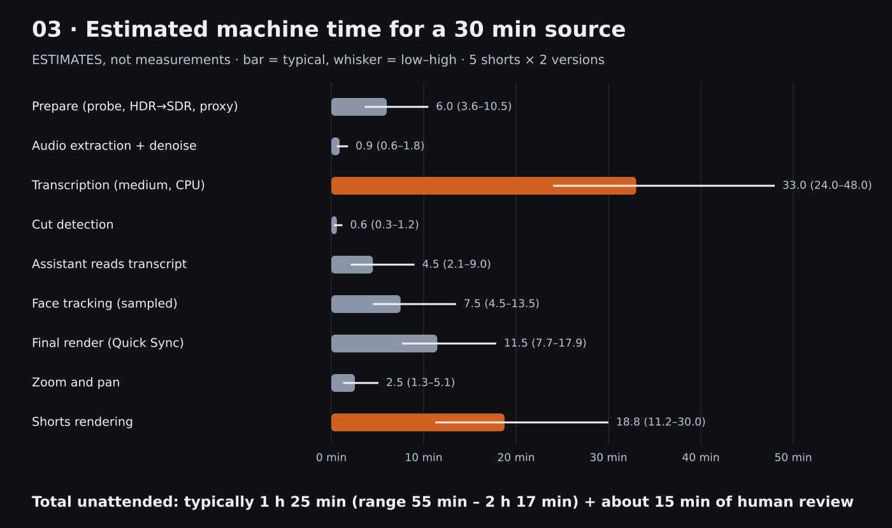
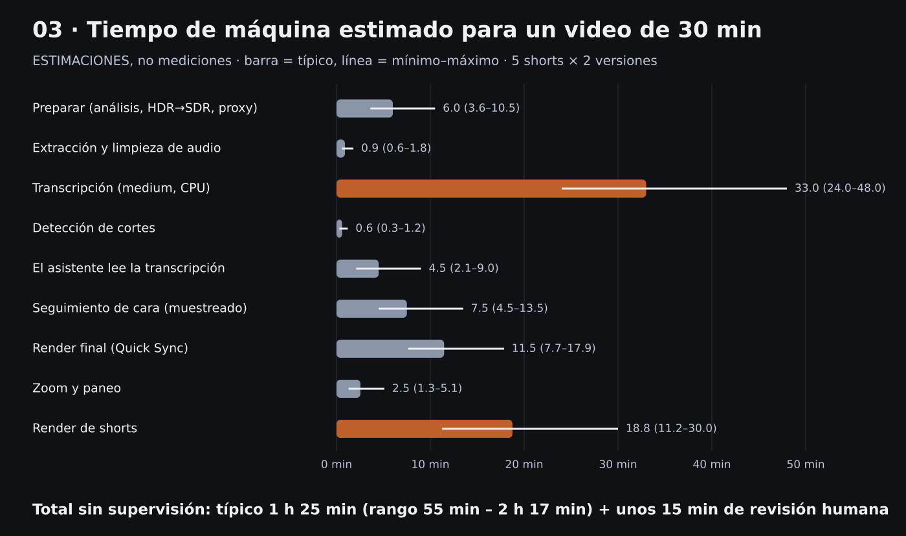
Hardware proposal
Propuesta de hardware
A small x86 Linux machine is enough. A GPU is an optional upgrade, only if measurements justify it.
Alcanza con una máquina Linux x86 chica. La GPU es una mejora opcional, sólo si las mediciones la justifican.
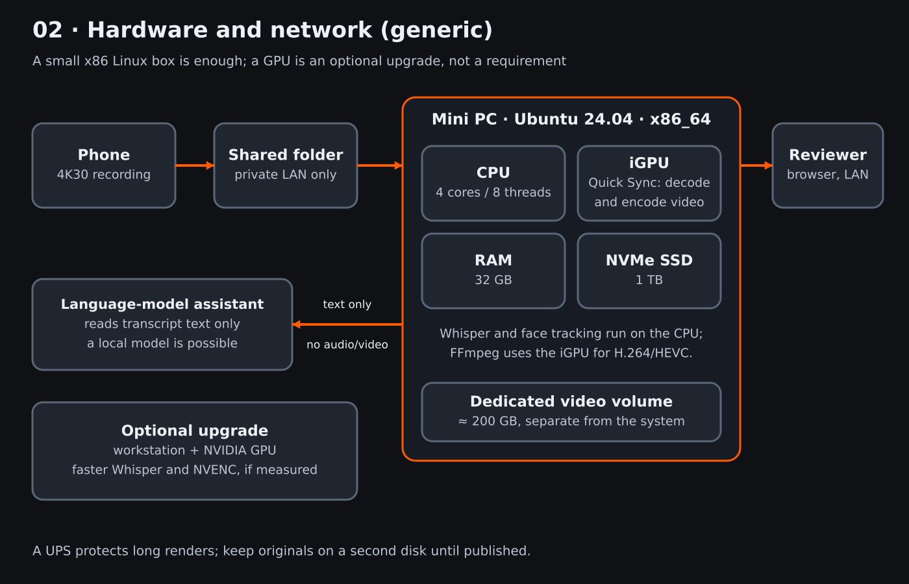
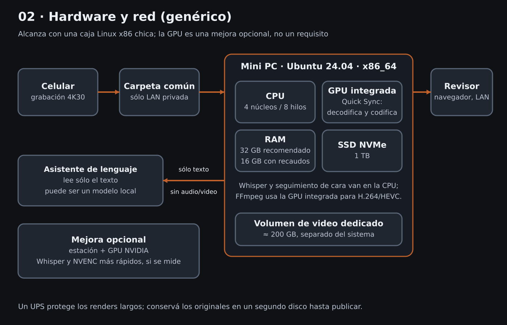
Shorts and subtitles
Shorts y subtítulos
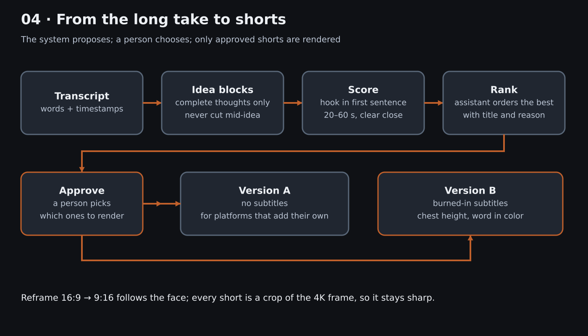
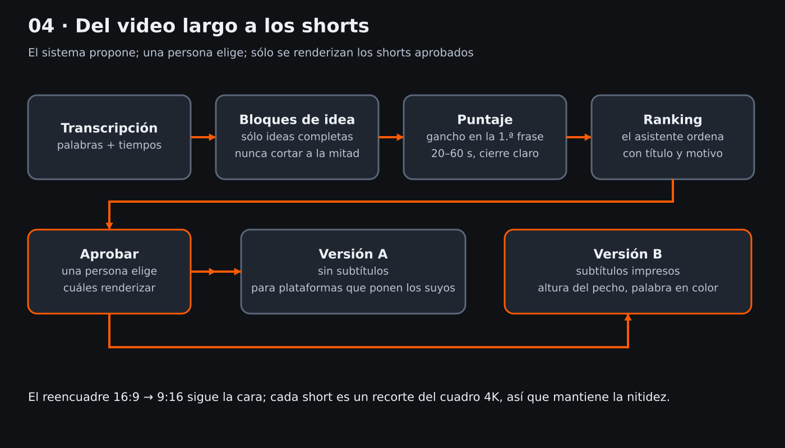
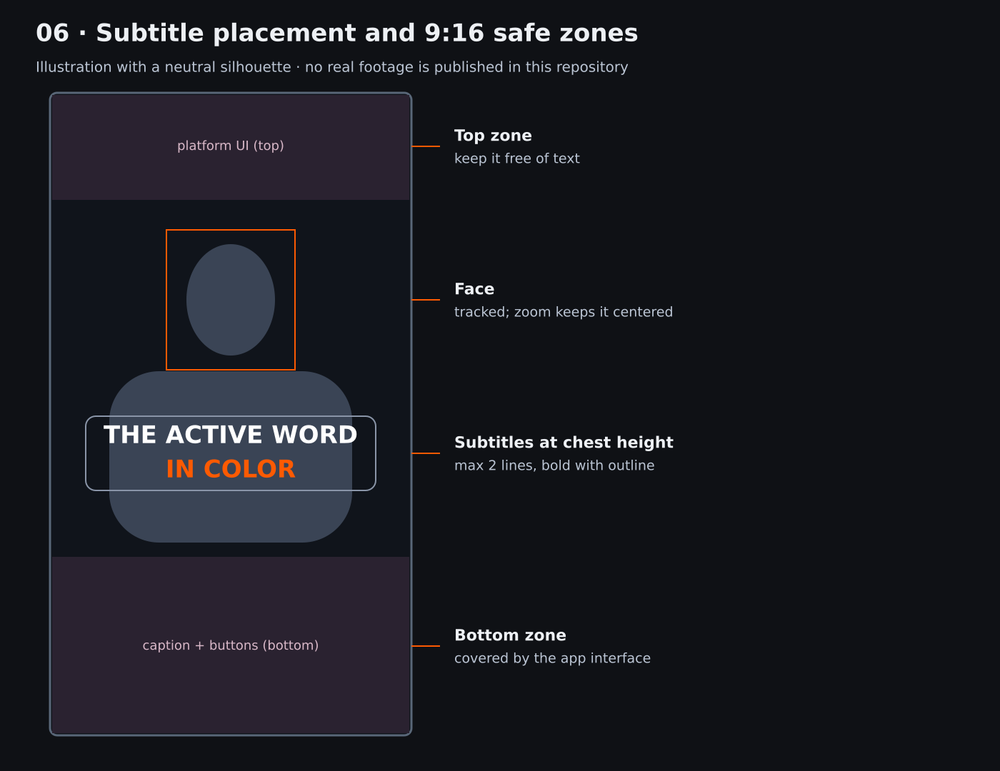
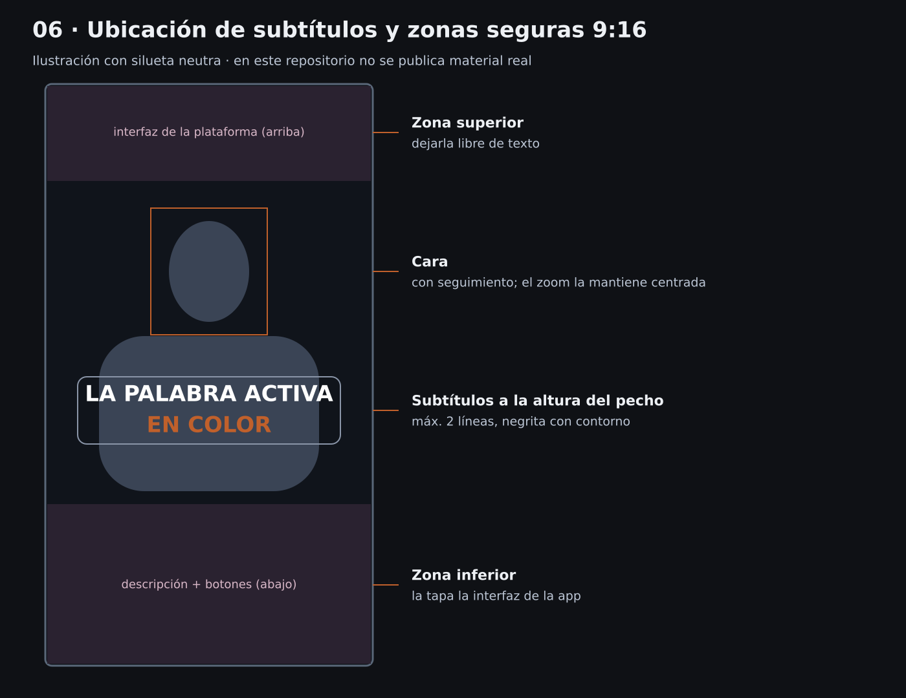
| Polished | Prolijo | Casual | Casual | ||
|---|---|---|---|---|---|
| Use | Uso | technical talks | charlas técnicas | spontaneous videos | videos espontáneos |
| Silences cut from | Silencios desde | 0.6 s | 1.2 s | ||
| Zoom | Zoom | on key phrases | en frases clave | none or one slow | ninguno o uno lento |
Privacy rules
Reglas de privacidad
Face and voice stay local
Cara y voz quedan en local
No cloud editor, transcription or upload.
Sin editores, transcripción ni subidas a la nube.
Text only to an assistant
Sólo texto a un asistente
Only the transcript text may be read; a local model is possible.
Sólo se puede leer el texto de la transcripción; es posible un modelo local.
Originals never deleted
Originales intactos
Removal only after a person confirms.
Se borran sólo cuando una persona confirma.